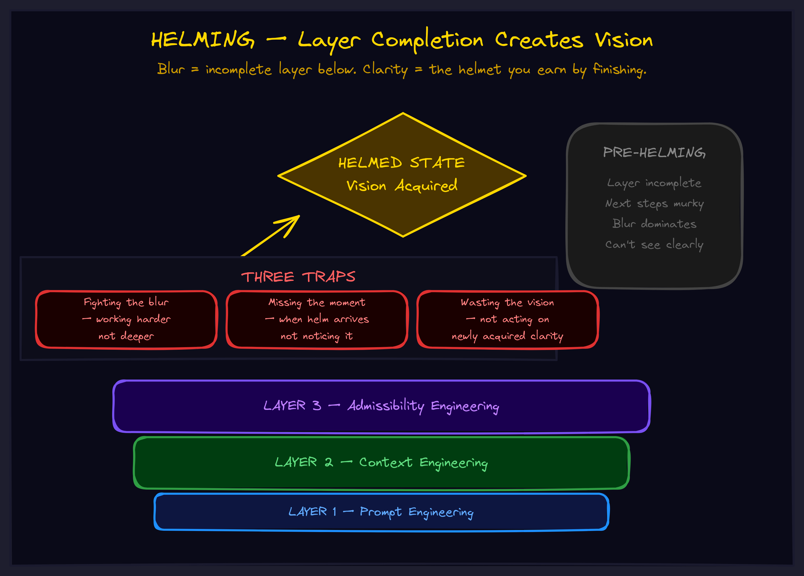

May 2026CompositionThe operator
Helming: Why You Can't See What to Build Next
You're not stuck because you're not smart enough. You're stuck because you haven't finished the layer that gives you vision of the next one.

The Blur Before the Breakthrough
You're building something complex. An AI system. A product. An org chart. And you hit the part where you need to specify what comes next — the subsystems, the interfaces, the components that have to exist for the whole thing to work.
So you make a list. And the list feels... arbitrary. "Maybe we need a coordinator. Maybe a planner. Maybe some kind of memory system." You're not designing. You're guessing. And you know it.
This isn't a failure of intelligence. It's a failure of vantage point. You can't see over a wall you haven't climbed yet.
The blur you're experiencing is information. It's telling you the current layer isn't done.
The Moment the Helmet Goes On
I was designing an agent architecture. I knew abstractly what I wanted — something that coordinates, stays aligned, handles complexity. But when I tried to specify the components, I was staring into fog. Every list I made felt like I was throwing darts blindfolded.
Then I completed the foundational framework. I ran the Allegorization Compiler across extreme environments — Buddhism, alpine skiing, high-altitude aviation — and triangulated the universal structure. Four boxes emerged: Pilot, Vehicle, Mission Control, Interaction Loops.
And something shifted.
Not gradually. Not with effort. It was like putting on a helmet with a visor. Suddenly I could see:
- "My architecture has no Mission Control." Obvious.
- "I need something that periodically checks alignment." Necessary.
- "These three capabilities are missing." Specific.
The specifications weren't invented. They were revealed. They'd been there the whole time — I just couldn't see them from the altitude I was standing at.
Helming is the acquisition of vision that occurs when a layer completes. Before it, you're guessing. After it, you're reading specifications that were always there.
Why Completion Creates Vision
The mechanism is cognitive compression.
Before you complete a layer, the complexity of that layer occupies your entire processing budget. You're holding undefined structures, managing ambiguity, wrestling with formless material. There's no spare capacity to perceive the next layer — you're fully consumed by the current one.
After completion, the layer compresses. What was dozens of undefined interactions becomes four boxes. The compression frees cognitive capacity. And — crucially — it provides stable ground to see from.
Think of climbing a staircase in the dark. Each step you complete becomes a platform. Once you're standing on it (not reaching for it), you can see the next step. The step was always there. But you could only perceive it from stable footing.
This is why you can't skip layers. Not just because the foundation would be unstable. But because you wouldn't be able to see where you're building.
The Helmet Metaphor
Why "helming" specifically? Because a helmet does three things at once:
- Vision. The visor lets you see what you couldn't see before. The environment doesn't change — your perceptual access to it does.
- Protection. The shell contains the complexity you've already processed. You don't have to keep solving it. It's stable beneath you.
- Readiness. Putting on the helmet signals you're equipped for the next challenge. You're not building the layer anymore. You're wearing it.
The transition from building a layer to wearing it — that's the helming moment.
The Three Traps
Most teams and most AI systems fall into one of three traps around helming:
Trap 1: Fighting the Blur
When you can't see the next requirements clearly, the temptation is to push through with guesses. "We'll figure it out as we go." But building on guesses produces structures that collapse — because the specifications weren't real, they were wishful.
The fix: Accept that blur means the current layer isn't complete. Instead of guessing at the next layer, return to the current one. Ask: "What's still unprocessed here?" Complete until helming occurs. The vision follows naturally.
Trap 2: Missing the Moment
Helming doesn't announce itself with fanfare. It's a subtle shift in perception. If you don't notice it, you might keep grinding on a layer that's already done, or fail to capture the vision that's now available.
The markers: Resolution replacing blur. Necessity replacing arbitrariness. Seeing replacing guessing. When specifications feel obvious rather than invented, helming has occurred.
Trap 3: Wasting the Vision
The clarity of helming is time-sensitive. Context switches, interruptions, or delays can fog it. The vision doesn't persist indefinitely.
The fix: Immediate capture. When helming occurs, write down what you see. The subsystems. The requirements. The specifications. Externalize the vision before it fades. That capture becomes the blueprint for the next layer.
Why This Matters for Your Business
Most AI implementations stall in the blur. A team knows abstractly they need "an agent system" but can't specify the components. So they guess. They pick a framework, wire together some tools, and hope clarity emerges from activity.
It doesn't. Activity without completion is motion without altitude. You can be extremely busy and never helm.
The companies that build AI systems that actually work do something different. They complete each layer before advancing:
Layer 0: Map your actual operations → Helm: see what's automatable Layer 1: Build one stable automation → Helm: see what orchestration needs Layer 2: Design the coordination layer → Helm: see where self-improvement fits Layer 3: Deploy the self-monitoring system → Crown: the system sees its own gaps
Each layer's completion reveals what the next layer needs to be. You don't have to guess at Layer 2 from Layer 0. You can't, actually. The vision comes from the altitude, and the altitude comes from completion.
The Monday Morning Test
Before you start your next work session, ask yourself:
Am I helmed for this?
- Can I see the subsystem requirements clearly? Or am I in blur?
- Do specifications feel necessary? Or arbitrary?
- Am I designing? Or guessing?
If blur: the previous layer isn't done. Go back and finish it.
If clarity: capture immediately. Write down what you see while the vision is fresh. Then build.
The cycle continues: blur, complete, helm, clarity, capture, new blur at the next height. That's how towers get built. That's how systems that compound actually compound.
See the Full Picture
Helming is one framework in a larger system. It connects to Towering (the layer-by-layer building process), Mission Control (the alignment protocol that keeps you on target while building), and the full architecture we use with clients.
If you want to figure out where your team is helmed and where it's stuck in blur — and what completing the current layer actually looks like for your specific operations — we should talk.